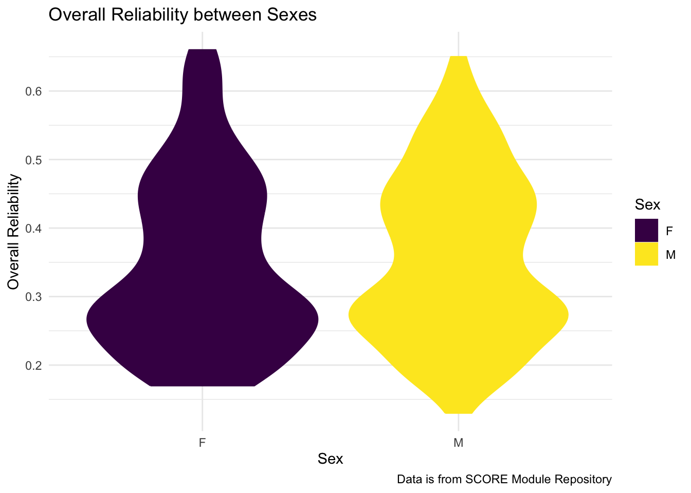
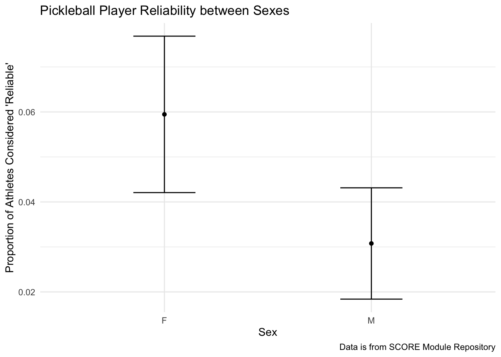
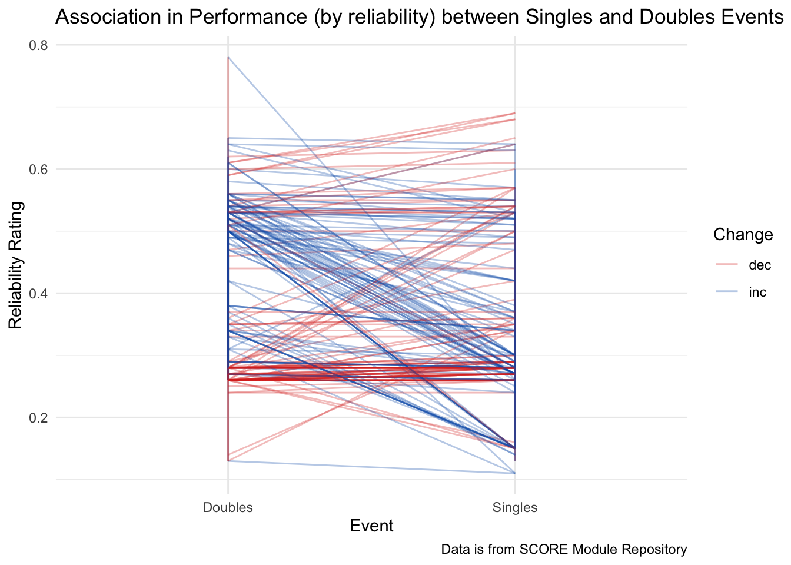

library(readr)
library(tidyverse)
pickleBall_2024 <- read_csv("~/Desktop/dataviz334/ds334_blog/posts/Pickleball Ratings/pickleBall_2024.csv")Introduction
This dataset looks at 380 pickleball players including 11 variables per individual:
| First Name | Last Name | Overall |
| Overall Reliability | Singles | Singles Reliability |
| Doubles | Doubles Reliability | Mixed |
| Mixed Reliability | Sex |
https://data.scorenetwork.org/pickleball/pickleball_ncpa_player_ratings-2024.html
Questions of Interest:
How does the reliability of players differ between sexes? Are there more reliable female players or male players?
Is there an association between how players perform in singles vs. doubles events?
Visualizations
Reliability of players between sexes
ggplot(data = pickleBall_2024, aes(x = Sex, y = `Overall Reliability`)) +
geom_violin(aes(colour = Sex, fill = Sex)) +
theme_minimal() +
labs(title = "Overall Reliability between Sexes",
caption = "Data is from SCORE Module Repository") +
scale_fill_viridis_d() +
scale_colour_viridis_d()
Looking at a violin plot of reliability, there is a similar trend between both female and male pickleball players when it comes to overall reliability. There is a cluster around 2.8 and another near 4.5. Both sexes taper off and show that not many players are above the threshold of 0.6, considered to be “reliable”.
“Reliable” is classified as having a reliability score of 0.6 or higher.
pickleBall_ind <- pickleBall_2024 |> mutate(rely_ind =
if_else(`Overall Reliability` >= 0.6,
true = 1,
false = 0)) |>
group_by(Sex) |>
summarise(rely_prop = mean(rely_ind),
se_rely = sqrt(rely_prop * (1-rely_prop) / n())) |>
mutate(se_lb = rely_prop - se_rely,
se_ub = rely_prop + se_rely)
ggplot(data = pickleBall_ind, aes(x = Sex, y = rely_prop)) +
geom_point() +
geom_errorbar(aes(ymin = se_lb,
ymax = se_ub), width = 0.3) +
theme_minimal() +
labs(x = "Sex", y = "Proportion of Athletes Considered 'Reliable'",
caption = "Data is from SCORE Module Repository",
title = "Pickleball Player Reliability between Sexes")
This plot shows that there is a higher proportion of female athletes (0.06) that are considered to be reliable than male athletes (0.03). This cannot be seen in the violin plot but is easily shown in the plot with errorbars
Association between Singles vs. Doubles Performance
pickleBall_change <- pickleBall_2024 |>
mutate(diff = `Doubles Reliability` - `Singles Reliability`,
Change = if_else(diff > 0, "inc", "dec"))
pickleBall_long <- pickleBall_change |>
filter(`Singles Reliability` > 0, ## some players have a score of 0 for an event
`Doubles Reliability` > 0) |>
dplyr::select(`First Name`, `Last Name`, Change, diff,
`Singles Reliability`, `Doubles Reliability`) |>
pivot_longer(
cols = c(`Singles Reliability`, `Doubles Reliability`),
names_to = "event",
values_to = "reliability"
) |>
mutate(event = if_else(event == "Singles Reliability", "Singles", "Doubles"))
ggplot(data = pickleBall_long, aes(x = event, y = reliability)) +
geom_line(aes(group = `First Name`, colour = Change), alpha = 0.3) +
theme_minimal() +
scale_color_manual(values = c("#DC3220", "#005AB5")) +
labs(title = "Association in Performance (by reliability) between Singles and Doubles Events by Player",
x = "Event", y = "Reliability Rating",
caption = "Data is from SCORE Module Repository")
The plot shows that many players are more reliable in either Singles or Doubles events, but most are not similarly reliable in both. There is not a trend indicating that more players are more reliable in Doubles rather than Singles nor the other way around.
Conclusions
There is not a trend in overall reliability between female and male pickleball athletes, but there is evidently a greater proportion of female athletes that are considered to be reliable. There is also an association between Singles and Doubles reliability as those players that tend to be more reliable in Doubles performances are not as reliable in Singles performances and vice versa.
Connection to Class Ideas
I used our concepts from Section 07 to show variability and uncertainty in proportions and plot using errorbars. I used concepts from Section 11 to create a plot showing the correlation in performance between singles events and doubles events ratings. All of the graphs demonstrate concepts learned in class of appropriate colour schemes, colouring by variables, and fixing aesthetics to create a better visualization. I utilized concepts from the grammar of graphics unit to enhance the visualizations and make them both easier and more appealing to look at.